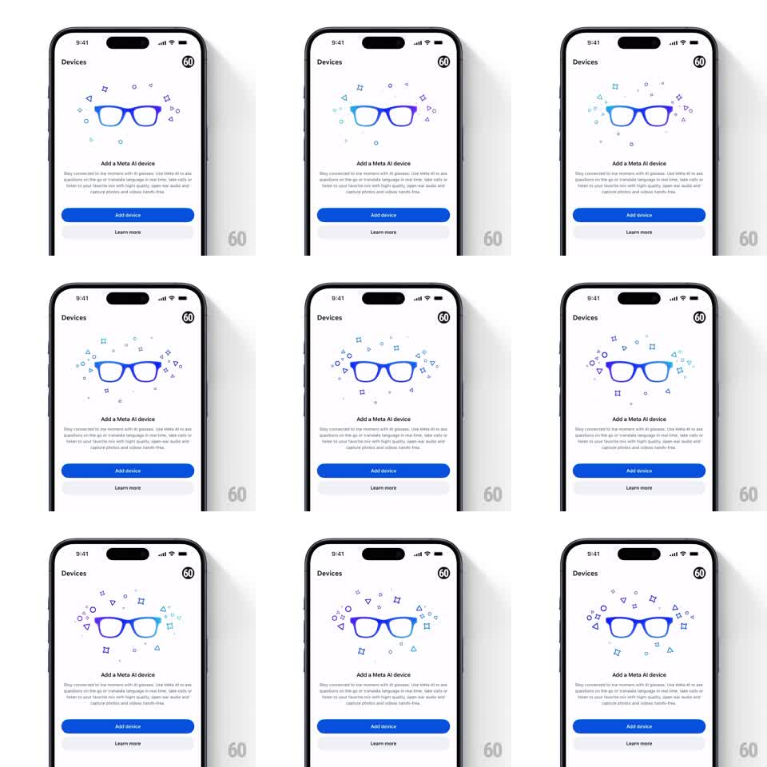

Media
Frame-by-frame

Rebuild this animation 1:1: Meta AI's Add Device idle - a line-art smart glasses illustration breathes with a slowly shifting blue-purple gradient while tiny geometric shapes drift and rotate around it.

Rebuild this animation 1:1: Meta AI's Add Device idle - a line-art smart glasses illustration breathes with a slowly shifting blue-purple gradient while tiny geometric shapes drift and rotate around it. ## Integration Integration: stack-agnostic spec - springs given as stiffness/damping, timed motions as duration + curve; map every value to your framework and animation library of choice. ## Scene "Devices" screen (white): header with "Devices" title, a centered smart-glasses illustration (outline style, gradient stroke), a loose constellation of small shapes (triangles, squares, diamonds, sparkles) around it, "Add a Meta AI device" title, a paragraph of subcopy, a blue "Add device" button, and a "Learn more" link. ## Motion spec Pattern: ambient gradient shift with orbiting shape drift. - The glasses' stroke gradient rotates slowly (hue travels blue -> purple -> teal -> blue over 6s, linear, looped). - Each surrounding shape follows its own small orbit (translate in a 10-20pt ellipse, 4-7s period, phase-offset per shape) while rotating slowly (+-30deg over its orbit). - Shapes take the gradient's current hue with a slight lag (200ms), so color washes across the constellation. - One sparkle shape twinkles (opacity 0.3 -> 1 -> 0.3, 1.8s) in rotation among the set. - The glasses gently bob (translateY +-3pt, 3s, ease-in-out); all copy and buttons static. ## Calibration - Ambient is the keyword: peak velocity on any element stays under 15pt/s. - Shape strokes are thin (1.5pt) and unfilled; the glasses are the only bold element. ## Reduced motion Static gradient; shapes frozen in a balanced arrangement. ## Don't miss - The gradient lives on the illustration strokes, not the background. - Shapes never overlap the glasses frames - orbits keep a clear central zone.